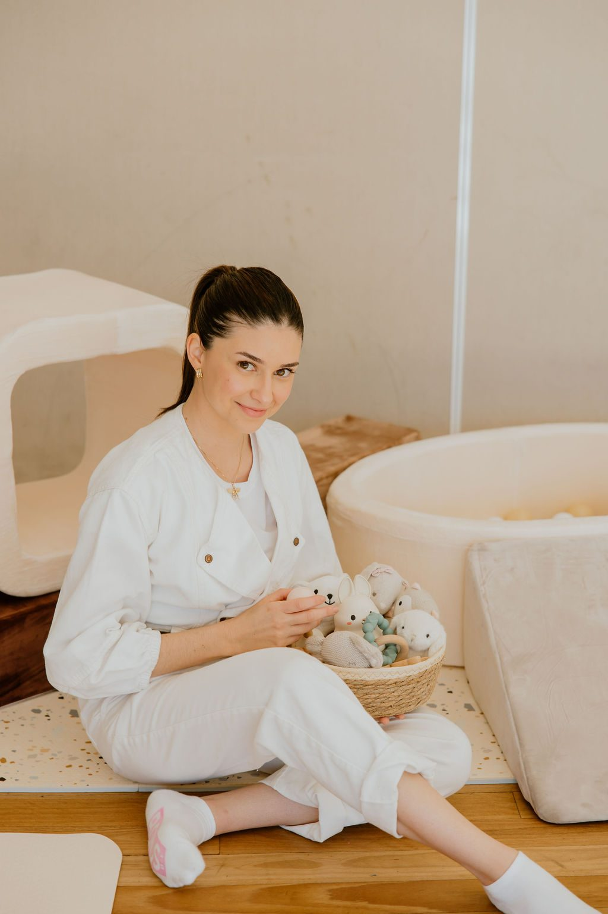
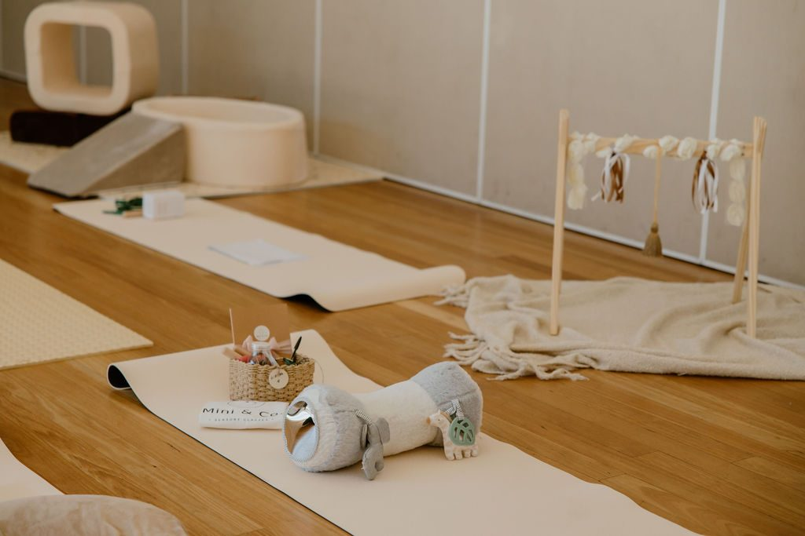
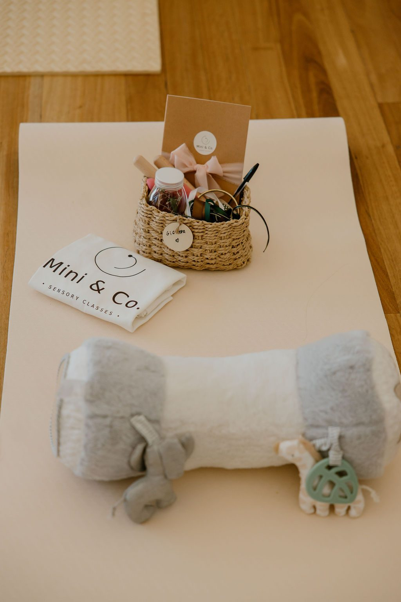
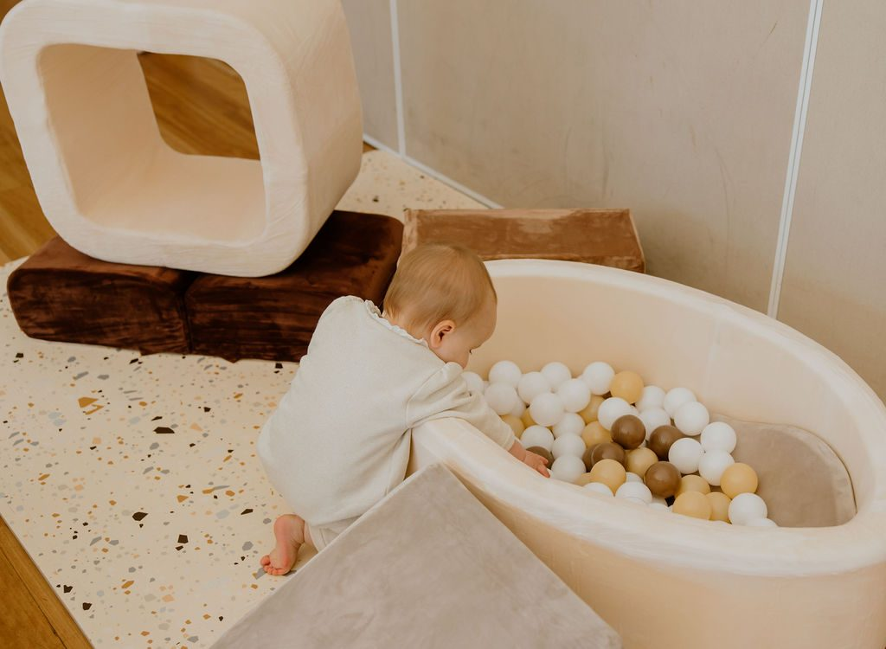

Simple sensory activities for little ones 3–12 months
A little gift for our Term 4 families

Welcome
Hello, and welcome to Term 4
I'm so glad you and your little one are here.
This little book is full of simple ways to keep playing at home between our Wednesday classes. You won't need anything fancy. Most activities use things you already have: a scarf, a wooden spoon, a cardboard box.
There's no right way to do any of them. Follow your little one's lead, keep it short, and stop when they've had enough. Some days they'll love an activity, other days they'll simply watch, and that's okay too.
The most important part of every activity is you: your face, your voice, and the little back-and-forth moments between you.
See you on Wednesday,Camila
Play at Home
Before you start
How to use this book
A few gentle ideas to make play feel easy.
Ages are a rough guide. Every little one grows at their own pace, so dip into the sections either side of their age too.
A few minutes is plenty. Play is easiest when your little one is fed, rested and alert.
Watch their cues. Turning away, yawning, arching or fussing can all mean "I need a break".
Talk about what's happening. Name what they see, hear and touch, even before they understand the words.
Take turns. When your little one coos, looks or points, respond, then pause and wait for their reply. This "serve and return" helps build early language and connection.
Repeat the favourites. Little ones love doing the same thing again and again. That's how they learn.
The ideas in this book draw on the same sources as our classes: the Harvard Center on the Developing Child, Australia's Early Years Learning Framework, and the Raising Children Network.
They're general play ideas, not health advice. If you have any questions about your little one's development, have a chat with your child and family health nurse or GP.
Play at Home
Safe play
Play safety tips
Quick reminders to keep play safe and relaxed.
Always stay close. Every activity in this book is for supervised play, with you right beside them.
Try the toilet roll test. If an object fits inside a toilet roll tube, it's small enough to choke on, so keep it out of reach. Check toys for loose or broken parts.
Water play. Stay within arm's reach the whole time, even with a shallow tray, and tip the water out as soon as you're done.
Scarves, ribbons and cords. Use them only during play, keep them away from necks, and pack them away straight after.
Sensory bottles. Glue and tape the lids shut, and check for cracks or leaks before each play.
Food play. Only use foods your little one has already eaten without a reaction.
Tummy time is for awake time. Always put your little one on their back to sleep.
Outdoors. Keep little ones under 12 months out of direct sun. Play in full shade and check the ground for prickles, ants and sharp bits.
Mirrors and bubbles. Use a baby-safe, shatterproof mirror. Blow bubbles away from faces and keep the mixture out of reach.
Play at Home

Part one
3–6 months
Watching, listening, reaching
Little ones at this age are lifting their heads, following things with their eyes, discovering their hands and starting to reach and grasp. Some begin to roll. Faces, voices and gentle touch are their favourite things of all.
Tummy time mirror
Black and white cards
Floating scarf
Texture tour
Copycat chat
Where's that sound?
Kick and crinkle
Under the trees
3–6 months
3–6 months
1
Tummy time mirror
Little ones love faces, especially their own.
You'll needA baby-safe mirror and a soft blanket.
Lay your little one on their tummy and stand the mirror just in front of them.
Lie down at their level and chat about the little one in the mirror.
Start with a minute or two and build up as they get stronger.
Why it helpsTummy time builds neck, shoulder and arm strength, and the mirror gives them a reason to lift their head.
2
Black and white cards
Bold patterns are easy for young eyes to see.
You'll needWhite card and a thick black marker. Draw stripes, spots, a spiral and a simple face.
Hold a card about 20–30 cm from their face and let them look.
Slowly move it from side to side and watch their eyes follow.
Swap to a new card when their interest drops.
Why it helpsFollowing a moving picture is great practice for focusing and tracking with their eyes.
Mini & Co. · Play at Home
3–6 months
3
Floating scarf
A soft scarf drifting down is a gentle surprise.
You'll needA light, sheer scarf or a muslin.
With your little one on their back, hold the scarf up high and let it float down onto their tummy.
Slowly draw it across their hands and feet.
Say "Up, up, up… down!" each time it falls.
Why it helpsThey feel a new texture, watch the movement and begin to expect what comes next.
SafetyKeep the scarf away from their face and pack it away after play.
4
Texture tour
Tiny hands and feet are wonderful explorers.
You'll needThree or four fabrics that feel different: a towel, velvet, silk, a knitted jumper.
Gently brush each fabric over their hands, feet and tummy.
Name each one as you go: "Soft… bumpy… smooth."
Watch their face. Do they have a favourite?
Why it helpsTouch is one of the very first ways little ones learn about the world around them.
Mini & Co. · Play at Home
3–6 months
5
Copycat chat
Your little one is already trying to talk with you.
You'll needJust you.
Get face to face, about 30 cm apart.
When they coo, smile or poke out their tongue, copy them.
Then pause and wait. Give them time to "answer" you.
Why it helpsThis back-and-forth, called "serve and return", supports early language and your connection.
6
Where's that sound?
A simple listening game.
You'll needA rattle, or a small container of rice with the lid taped shut.
Gently shake the rattle to one side of their head, just out of sight.
Wait for them to turn and find it, then smile and celebrate.
Try the other side, then above them.
Why it helpsTurning to find a sound links hearing with seeing and builds head control.
Mini & Co. · Play at Home
3–6 months
7
Kick and crinkle
Every kick makes a sound.
You'll needA crinkly toy or a sheet of baking paper.
Lay your little one on their back and hold the crinkly paper at their feet.
When they kick, it crinkles. Say "Crinkle, crinkle!"
Move it up to their hands for grabbing and scrunching too.
Why it helpsThey begin to notice that their own movements make things happen.
SafetyStay close, and put the paper away after play.
8
Under the trees
The best mobile is outside.
You'll needA blanket and a shady spot under a tree.
Lie side by side on your backs, in full shade.
Watch the leaves move and the light flicker together.
Talk about what you can see, hear and feel: the breeze, a bird, a passing car.
Why it helpsMoving leaves and outdoor sounds make a rich, calm sensory experience.
SafetyKeep little ones under 12 months out of direct sun.
Mini & Co. · Play at Home

Part two
6–9 months
Sitting, grabbing, discovering
Many little ones are learning to sit, passing toys from hand to hand and exploring everything with their mouths. They're babbling, and starting to understand that things still exist when they're hidden. Some are getting ready to crawl.
Treasure basket
Sensory bottles
Peekaboo hide
Kitchen band
Splash tray
Tissue box pull
Yoghurt painting
Touch-and-feel books
6–9 months
6–9 months
1
Treasure basket
Everyday objects to explore at their own pace.
You'll needA low basket and 5–8 clean household things: a wooden spoon, metal measuring cups, a silicone whisk, a soft brush, a cloth napkin.
Sit your little one beside the basket, with support if they need it.
Let them choose, hold, mouth and bang. Try not to jump in.
Name each thing as they pick it up.
Why it helpsDifferent weights, temperatures and textures give their senses lots to explore, and they get to lead.
2
Sensory bottles
Shake it, roll it, watch it.
You'll needTwo or three small, clear plastic bottles, fillers like rice, pom-poms, or water with a drop of food colouring, plus strong glue and tape.
Fill each bottle, then glue and tape the lid shut.
Roll one slowly across the floor, or shake it beside them.
Let them hold, shake and roll it themselves.
Why it helpsWatching things move and hearing different sounds builds attention and curiosity.
Mini & Co. · Play at Home
6–9 months
3
Peekaboo hide
Where did it go?
You'll needA favourite toy and a muslin.
While they're watching, cover the toy with the muslin.
Ask "Where's teddy?" and pause.
Lift the cloth: "There it is!" Soon they'll pull it off themselves.
Why it helpsIt helps them learn that things are still there even when they can't see them.
4
Kitchen band
Make some noise together.
You'll needA saucepan or plastic bowls, and a wooden spoon.
Turn the pots upside down and show them a gentle tap.
Hand over the spoon and let them bang away.
Copy their rhythm, then take turns.
Why it helpsMaking sounds happen teaches cause and effect, and taking turns is an early conversation.
Mini & Co. · Play at Home
6–9 months
5
Splash tray
A little water goes a long way.
You'll needA baking tray or shallow tub with a few centimetres of water, a plastic cup and a sponge.
Sit together on a towel with the tray in front of you.
Pat, splash and squeeze the sponge. Pour from the cup.
Try a little warm water, then a little cool.
Why it helpsWater is calming for many little ones and full of new feelings to explore.
SafetyStay within arm's reach and tip the water out straight after.
6
Tissue box pull
Pull, and there's always one more.
You'll needAn empty tissue box and a few soft scarves or muslins.
Tuck the scarves inside, leaving a corner poking out.
Show them how to pull one out, then let them try.
Say "Pull… pull… out!", then stuff them back in together.
Why it helpsPulling strengthens little hands and grip, and the surprise keeps them coming back.
SafetyPack the scarves away after play.
Mini & Co. · Play at Home
6–9 months
7
Yoghurt painting
Messy play they're allowed to taste.
You'll needPlain yoghurt, a little mashed berry or pumpkin for colour, and the high chair tray.
Pop a few spoonfuls of yoghurt on the tray.
Show them how to swirl it with one finger.
Let them squish, smear and taste. Wiping down is part of the fun.
Why it helpsMessy play invites them to explore new textures with their whole hands.
SafetyOnly use foods your little one has already eaten without a reaction.
8
Touch-and-feel books
Reading together, one page at a time.
You'll needBoard books with textures, flaps or bright pictures.
Sit them on your lap with the book in front of you both.
Guide their hand to feel each texture, and name it.
Let them turn the pages, chew the corners and set the pace.
Why it helpsSharing books, even before words, supports language and connection.
Mini & Co. · Play at Home

Part three
9–12 months
Moving, pointing, little words
Many little ones are crawling, pulling up to stand and cruising along the furniture. They're picking things up between thumb and finger, pointing, waving and clapping, and some are saying their very first words.
Posting box
Sticky window
Cushion course
Bubble pop
Muffin tin find-it
Action songs
Point and name walk
Barefoot garden
9–12 months
9–12 months
1
Posting box
In it goes. Where did it go?
You'll needA shoebox or formula tin with a slot cut in the lid, and some large jar lids or flat blocks.
Show them how to push a lid through the slot.
Count as they go in: "One… two… three!"
Open the box together to find them all again.
Why it helpsLining things up and posting them builds hand–eye coordination and control.
SafetyTape over any sharp cut edges.
2
Sticky window
A sticky surprise at standing height.
You'll needClear contact paper, tape, and light things to stick: tissue paper, fabric scraps, big leaves.
Tape the contact paper to a low window or door, sticky side out.
Show them how to press the pieces on and peel them off.
Leave it up for a few days and add new things.
Why it helpsReaching while standing practises balance, and peeling works those little fingers.
Mini & Co. · Play at Home
9–12 months
3
Cushion course
A soft adventure across the lounge room.
You'll needCouch cushions, pillows, and a big cardboard box with both ends open.
Lay out cushions to crawl over and a box tunnel to crawl through.
Wait at the other end with a big smile or a favourite toy.
Change the course as they grow more confident.
Why it helpsClimbing and crawling build strength and coordination, and help them learn where their body is in space.
4
Bubble pop
Simple, and magical every time.
You'll needBubble mixture and a wand.
Blow bubbles slowly so they float down near your little one, not at their face.
Say "Pop!" each time one bursts.
Watch them reach, point and crawl after them.
Why it helpsFollowing and reaching for bubbles builds coordination, and "pop!" is a fun early word.
SafetyKeep the bubble mixture out of reach.
Mini & Co. · Play at Home
9–12 months
5
Muffin tin find-it
Hide and seek for little fingers.
You'll needA muffin tin, a few toys that pass the toilet roll test, and some fabric squares.
Pop a toy in some of the cups and cover every cup with a fabric square.
Let them lift the covers to see what's hiding.
Swap the toys around and play again.
Why it helpsSearching for hidden toys builds memory and problem solving, and lifting the covers uses those fine finger muscles.
6
Action songs
Songs with movements they can copy.
You'll needYour voice. Try "Twinkle Twinkle", "Wind the Bobbin Up" or "Open, Shut Them".
Sing slowly, with big, clear actions.
Pause just before a favourite action and see if they do it.
Celebrate every wave, clap and wiggle.
Why it helpsCopying actions is an early step towards gestures and words.
Mini & Co. · Play at Home
9–12 months
7
Point and name walk
Let them be the tour guide.
You'll needNothing but a little time, indoors or out.
Carry them, or crawl along together, around the house or garden.
When they point or look at something, name it: "Dog! A big, fluffy dog."
Point things out for them to find too.
Why it helpsLooking at the same thing together and naming it helps link words with the world around them.
8
Barefoot garden
Grass, sand and leaves under tiny hands and feet.
You'll needA shady patch of grass, a handful of leaves and a tray of sand.
Let them sit, crawl or stand on the grass with bare feet.
Offer leaves to scrunch and a tray of sand to pat.
Talk about how it all feels: tickly, crunchy, cool.
Why it helpsOutdoor textures give hands and feet lots of new things to feel, which helps with balance and body awareness.
SafetyCheck for prickles and ants first, stay in the shade, and watch for sand in mouths.
Mini & Co. · Play at Home
Thank you for playing with us
A calmer way to play, for little ones 3–12 months and their mums.
Classes
Wednesdays · 11 am & 1 pm
Sandown Room, Oran Park Library
72 Central Ave, Oran Park NSW 2570